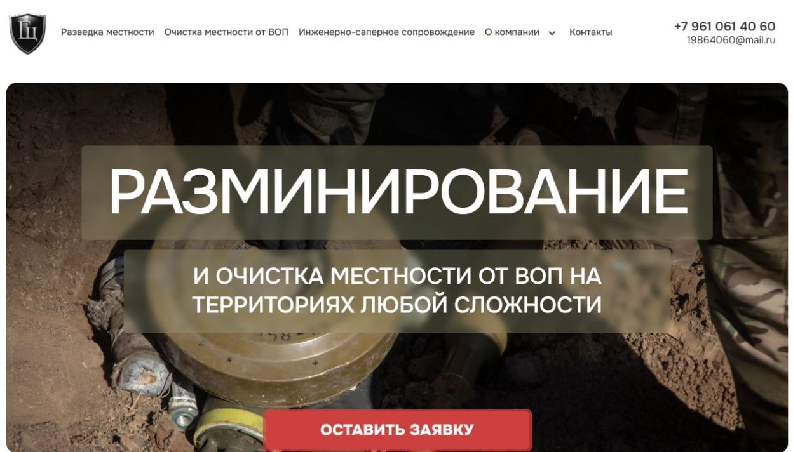
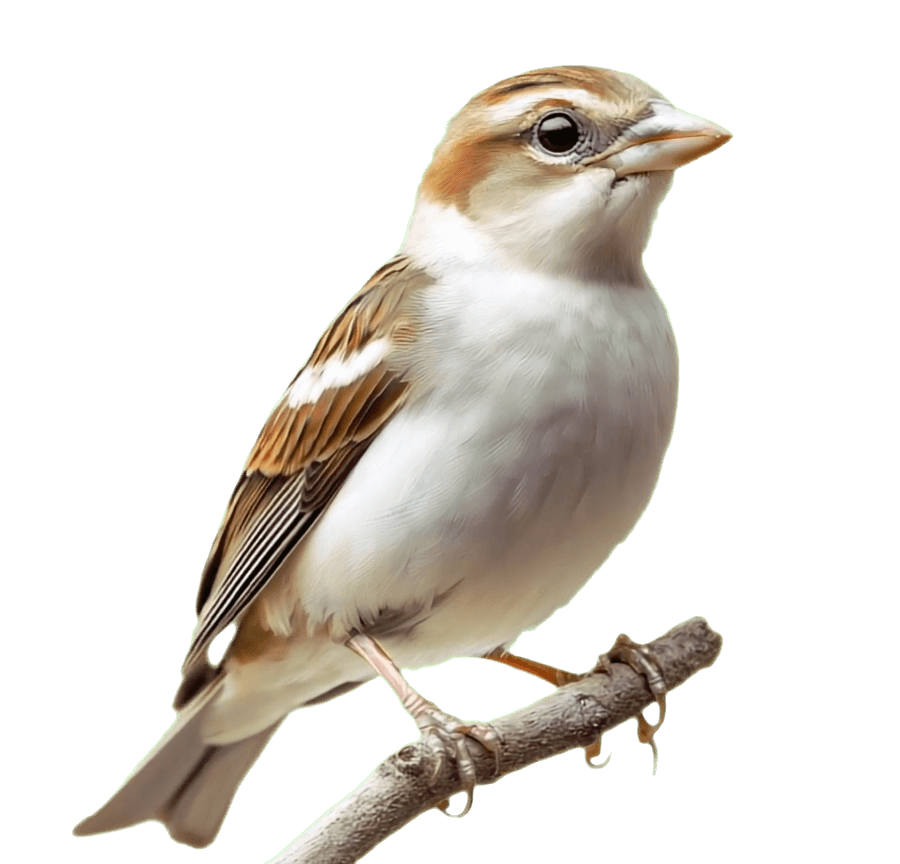
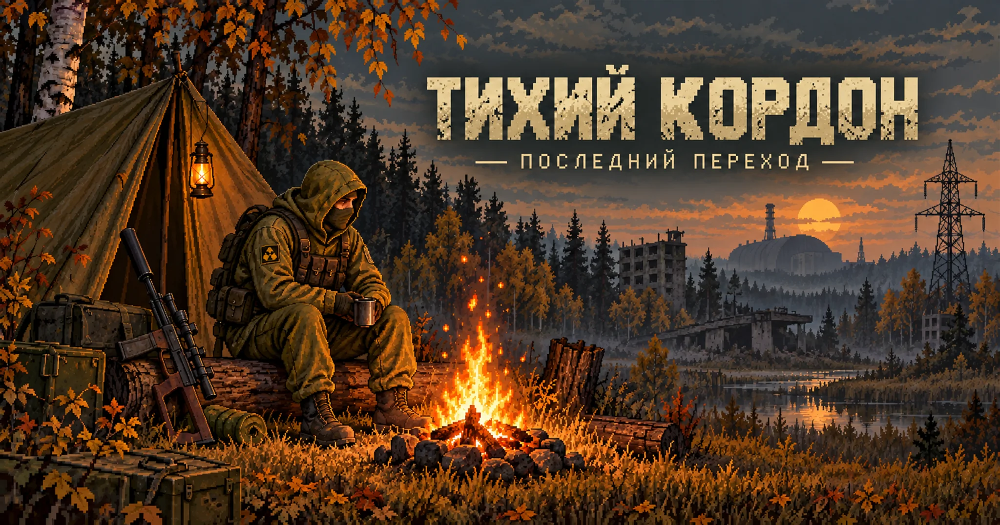
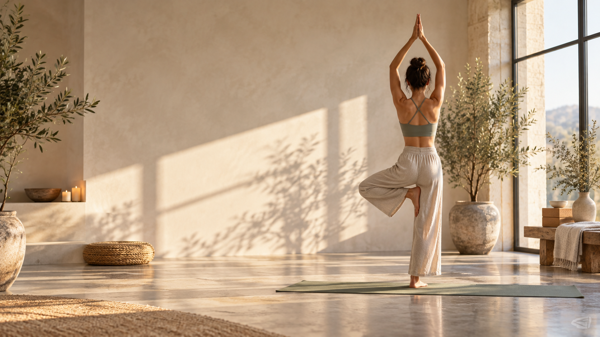
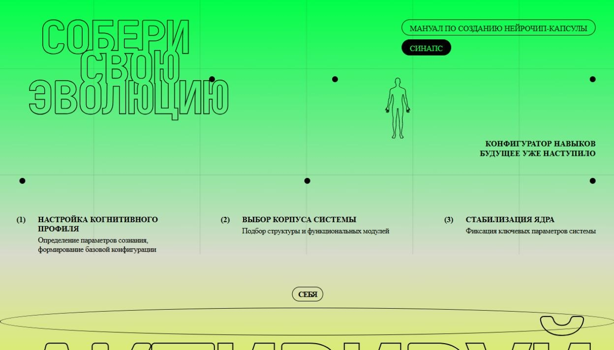
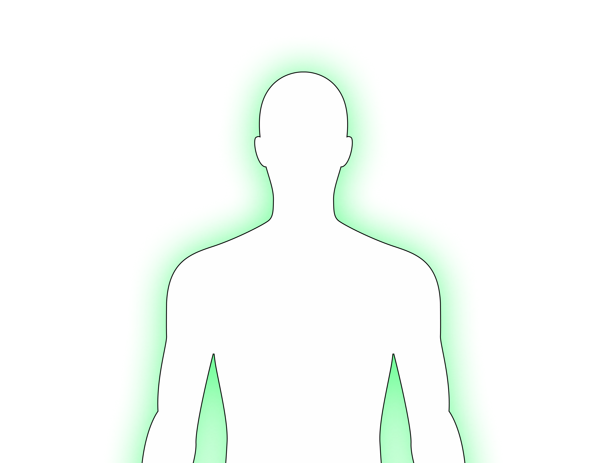
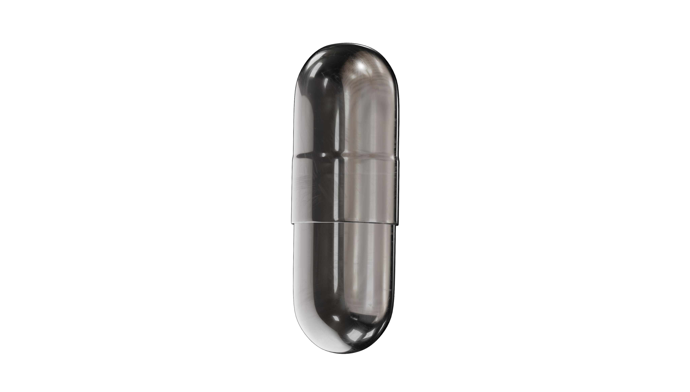
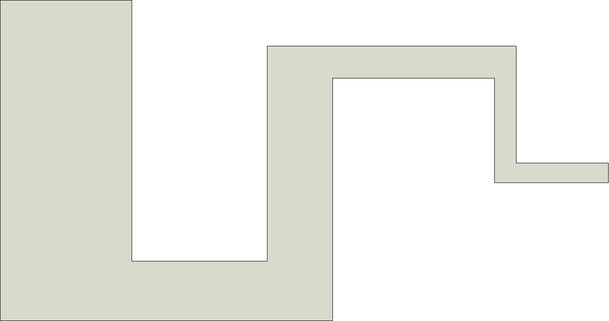

01 / SELECTED WORK
точность в деталях

Корпоративный сайт
01 / 07
Геощит
Сайт компании по разведке и очистке местности: услуги, проекты и ясная структура для обращения клиентов.
HTML · CSS · JavaScript
Меня зовут Максим. Разрабатываю адаптивные сайты и интерактивные веб-интерфейсы, в которых форма помогает содержанию.
01 / ИЗБРАННОЕ
От выразительных портфолио до сайтов с чёткой деловой задачей.
02 / ОСОБЫЙ ПРОЕКТ
Экологический проект
Полностью разработал сайт проекта защиты птиц от столкновений с окнами и перенёс его на Tilda. Экологическая идея здесь превращается в понятную историю и удобный путь к заказу.
Адаптивная вёрстка · Tilda · JavaScript

03 / ОСОБЫЙ ПРОЕКТ
Браузерная игра
Исследуйте Зону, выбирайте маршрут и собирайте артефакты. У игры собственный мир, система событий, инвентарь и звук.
JavaScript · Canvas · SCSS · Gulp

04 / ОСОБЫЙ ПРОЕКТ
Платформа для практики
В команде развиваю платформу онлайн-йоги: страницы занятий, курсов и материалов. Работа над проектом продолжается — важно, чтобы путь к практике был ясным и удобным на каждом устройстве.
Командная разработка · Адаптивные интерфейсы

05 / ДРУГИЕ ОБЛАСТИ
Приложение для Windows
Создал приложение на C# для настройки цветовой температуры и яркости экрана. Два регулятора применяют изменения сразу и сохраняют выбранные значения, а переключатель возвращает исходный вид.
C# · Windows Forms · .NET Framework
06 / HTML-ПИСЬМА
От яркой рассылки до компактного сервисного письма с важными деталями.
Серия HTML-писем для студии: табличная структура, изображения, типографика и адаптация под узкий экран.
Шаблон письма с подтверждением и данными посещения. Простая структура помогает быстро найти главное.
Отдельный HTML-шаблон из серии SHEER: крупный заголовок, последовательные смысловые блоки и заметный призыв к действию.
07 / ПРАКТИКА
Коммерческая разработка, проектная вёрстка и собственные веб-проекты.
Frontend-разработчик
Разработка новых интерфейсов и поддержка действующих проектов, в том числе на React и Astro.
HTML-верстальщик
Проектная вёрстка сайтов для клиентов студии.
HTML-верстальщик
Вёрстка новых страниц и доработка текущих проектов.
Junior React Developer
Вёрстка React-компонентов.
Frontend-разработчик
Разработка сайта, настройка хостинга, публикация и поддержка.
Frontend-разработчик
Самостоятельная разработка сайта.
HTML-верстальщик
Проектная вёрстка сайта.
08 / ИНСТРУМЕНТЫ
Winter Dev Kit — моя рабочая сборка на Gulp 4. Она собирает страницы из модулей, обрабатывает стили и скрипты и готовит графику к публикации.
SCSS / Sass, HTML-компоненты, автопрефиксер
Babel, BrowserSync и карты исходников
WebP, SVG-спрайты, оптимизация изображений и шрифты
09 / БИБЛИОТЕКИ
Небольшие открытые коллекции для интерфейсов и визуальных экспериментов.
Коллекция PNG-файлов с двухбуквенными названиями стран. Готовый визуальный материал для списков, каталогов и интерфейсов.
Смотреть библиотекуБиблиотека анимированных SVG для разных проектов: пластичные формы, геометрия и небольшие визуальные эффекты.
Смотреть библиотекуSVG-бейджи App Store и Google Play на разных языках — готовые элементы для страниц мобильных приложений.
Смотреть библиотеку10 / ПОДХОД
Хороший интерфейс ощущается естественно: быстро помогает найти главное, остаётся понятным на любом экране и запоминается тонкими деталями.
Семантичная разметка, логичные БЭМ-классы и компоненты, которые легко расширять и поддерживать.
Анимация выделяет действие, помогает ориентироваться и добавляет характер, не отвлекая от содержания.
Композиция сохраняет ясность на широком мониторе, планшете и телефоне шириной от 320 пикселей.
11 / СТУДЕНТАМ
Помогаю с учебными веб-проектами по техническому заданию: от разбора требований и вёрстки до подготовки итоговой версии. Подробно объясняю решения и сопровождаю проект до сдачи.
Обсудить заданиеОдин понятный процесс: план, код, проверка и помощь с финальными правками.
Разбираем ТЗ, требования к страницам и вопросы по коду. Объясняю, как устроен проект и почему выбраны эти решения.
Верстаю адаптивные страницы с понятными файлами и классами. Если по заданию нужны только HTML и CSS, обходимся без конструкторов.
По договорённости веду проект в вашем репозитории: видны изменения, история работы и актуальная версия кода.
Помогаю проверить результат по ТЗ, подготовить проект к показу и внести необходимые правки перед сдачей.
Нажмите на этап, чтобы увидеть, что происходит на каждом шаге.
Смотрим требования, примеры, сроки и формат сдачи. После консультации понятно, что именно нужно сделать и какие материалы понадобятся.
Определяем страницы, блоки и структуру файлов. Согласуем порядок работы, чтобы каждый следующий шаг был понятен.
Делаю адаптивную вёрстку и показываю промежуточный результат. При желании работа идёт прямо в вашем GitHub-репозитории.
Сверяем результат с ТЗ, разбираем устройство проекта и доводим детали до финальной версии. Остаюсь на связи по вопросам перед сдачей.
ПРИМЕРЫ / ПРЕЗЕНТАЦИЯ
Три разных формата: промосайт, презентация шрифта и футуристичный интерактивный интерфейс.
Промосайт о челленджах и привычках: выразительный первый экран, разделы с заданиями и интерфейс приложения в визуальной истории.
Анимированная презентация шрифта, где крупные буквы, цвет и движение становятся главным содержанием страницы.
Футуристичный сайт о симуляции навыков. Контрастная типографика, крупная графика и анимация собирают историю цифрового продукта.
04 / СТУДЕНЧЕСКИЙ КЕЙС
ИНТЕРАКТИВНЫЙ ПРОЕКТ / РАЗБОРМануал по созданию нейрочип-капсулы превращён в последовательный цифровой опыт. Посетитель собирает профиль, выбирает корпус и проходит активацию.
HTML · SCSS · JavaScript · Gulp

Три связанных этапа с собственным действием на каждом экране

Карточки способностей перетаскиваются на модель. Можно выбрать до трёх модулей, после чего профиль получает своё состояние.

Корпусы показаны в слайдере. Подсказки раскрывают характеристики, а выбранный вариант переходит к финальному этапу.

В мини-игре на Canvas нужно провести элемент по траектории, не касаясь стенок. Управление работает мышью и касанием; успешное прохождение завершает сценарий.
ОТЗЫВЫ / ВЁРСТКА САЙТОВ
Отзывы с Авито о проектах по вёрстке сайтов.